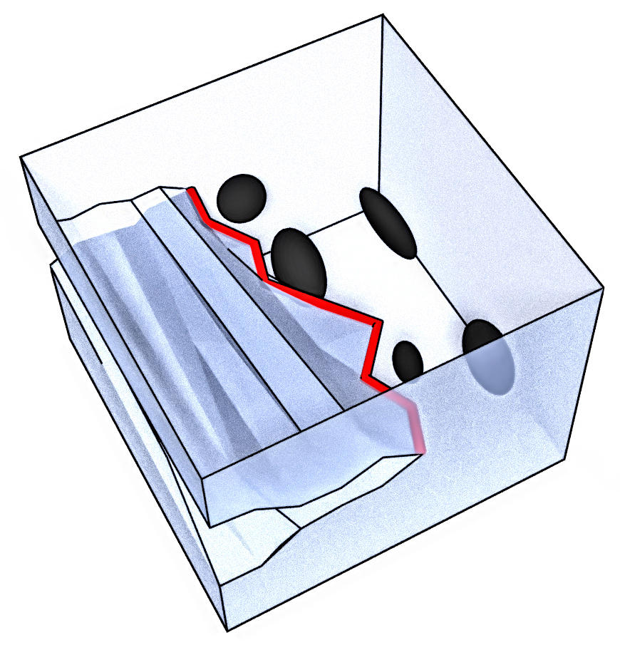
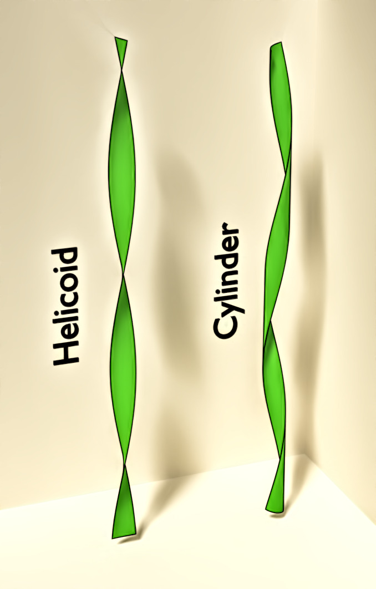

Stochastic particles and fields
Brownian particle interacting with a Gaussian field
In microrheology, the dynamics of a probe in a complex medium is used to infer the rheological properties of the surrounding medium; it is thus important to understand the relation between the properties of the medium and the effective dynamics of the probe.
We study the effective dynamics of a Brownian probe coupled to a Gaussian field following a Langevin equation, which constitutes a model for the complex medium. The Gaussian field may represent concentration fluctuations in a binary mixture or density fluctuations in a colloidal bath.
We have studied different configurations and computed different observables:
- The probe is driven at a constant velocity and the drag force generated by the field is computed.
- The probe is free to diffuse and its long-time diffusion coefficient is computed.
- The probe is submitted to a constant force and its effective mobility and long-time dispersion coefficient.
- The probe is held in a moving harmonic trap and the mean and variance of its position are calculated.
- The probe is held in a static harmonic trap and the variance and kurtosis of its displacement are calculated.
We focused on the case of a linear coupling to an overdamped Langevin equation, but we have also studied the effects of a quadratic coupling and an underdamped field. The system can either be at equilibrium or out of equilibrium, with a different temperatures for the field and the probe, a non-reciprocal coupling between them, or with an external forcing.

References
- Drag forces in classical fields, V. Démery and D. S. Dean, Phys. Rev. Lett. 104, pp 080601 (2010).
- Drag forces on inclusions in classical fields with dissipative dynamics, V. Démery and D. S. Dean, Eur. Phys. J. E 32, pp 377–390 (2010).
- Diffusion of active tracers in fluctuating fields, D. S. Dean and V. Démery, J. Phys. : Condens. Matter 23 234114 (2011).
- A perturbative path integral study of active and passive tracer diffusion in fluctuating fields, V. Démery and D. S. Dean, Phys. Rev. E 84, 011148 (2011).
- Thermal Casimir drag in fluctuating classical fields, V. Démery and D. S. Dean, Phys. Rev. E 84, 010103(R) (2011).
- Generalized Langevin equations for a driven tracer in dense soft colloids: construction and applications, V. Démery, H. Jacquin and O. Bénichou, New. J. Phys. 16, 053032 (2014).
- Mean-field microrheology of a very soft colloidal suspension: inertia induces shear-thickening, V. Démery, Phys. Rev. E 91, 062301 (2015).
- Driven probe under harmonic confinement in a colloidal bath, V. Démery and É. Fodor, J. Stat. Mech. 2019, 033202 (2019).
- Dynamics of a colloidal particle coupled to a Gaussian field: from a confinement-dependent to a non-linear memory, U. Basu, V. Démery and A. Gambassi, SciPost Phys. 13, 078 (2022).
- Non-Gaussian fluctuations of a probe coupled to a Gaussian field , V. Démery and A. Gambassi, Phys. Rev. E 108, 044604 (2023).
Interacting Brownian particles, correlations
We study the correlations in out-of-equilibrium many particle systems. Our main tool is to linearize the stochastic dynamics of the density fields around a uniform density. Under this approximation, which corresponds to the Debye-Hückel approximation for electrolytes or the random phase approximation in liquid theory, the density fluctuations are Gaussian fields and their correlation can be computed.
In particular, we have studied
- The conductitivity of an electrolyte: in a system with pair interactions, the calculation of the correlations provides a correction to the bare conductivity.
- The universal large distance correlations in a driven binary mixture with short range interactions.
- The universal pair correlations of Active Brownian Particles in the homogeneous phase at low density.
- The stress fluctuations of a system of interacting Brownian particles.
We have also considered single file systems, where particles cannot cross each other, giving rise to strong correlations. In particular, we have show that two driven probes are bound by the bath at low forces but may undergo an unbinding transition if the force is large enough.

- The conductivity of strong electrolytes from stochastic density functional theory, V. Démery and D. S. Dean, J. Stat. Mech. 023106 (2016).
- Universal long ranged correlations in driven binary mixtures, A. Poncet, O. Bénichou, V. Démery and G. Oshanin, Phys. Rev. Lett. 118, 118002 (2017).
- Unbinding transition of probes in single-file systems, O. Bénichou, V. Démery and A. Poncet, Phys. Rev. Lett. 120, 070601 (2018).
- Stresses in non-equilibrium fluids: Exact formulation and coarse grained theory, M. Krüger, A. Solon, V. Démery, C. M. Rohwer and D. S. Dean, J. Chem. Phys. 148, 084503 (2018).
- N-tag probability law of the symmetric exclusion process, A. Poncet, O. Bénichou, V. Démery and G. Oshanin, Phys. Rev. E 97, 062119 (2018).
- Pair correlation of dilute active Brownian particles: From low-activity dipolar correction to high-activity algebraic depletion wings, A. Poncet, O. Bénichou, V. Démery and D. Nishiguchi, Phys. Rev. E 103, 012605 (2021).
Self-propelled particles
We study self-propelled particles, which generically display "self-alignment": a torque aligns the orientation of the particles on their velocity. In interacting systems, self-alignment has been shown to induce alignment between the particles, leading to flocking.
For a single particle in a harmonic trap, we have shown that self-alignment induces a rotating phase.
We have then shown that an "elastic solid" made of a network of such self-propelled particles attached by springs displays "collective actuation", a phase where the particles move coherently along a trajectory selected by an interplay of elasticity and geometry.
- Dynamics of a Self-Propelled Particle in a Harmonic Trap, O. Dauchot and V. Démery, Phys. Rev. Lett. 122, 068002 (2019).
- Selective and collective actuation in active solids, P. Baconnier, D. Shohat, C. Hernandèz, C. Coulais, V. Démery, G. Düring and O. Dauchot, Nat. Phys. 1745-2481 (2022).
- Noise-Induced Collective Actuation in Active Solids, P. Baconnier, V. Démery and O. Dauchot, Phys. Rev. E 109, 024606 (2024).
Disordered elastic interfaces and application to failure
Disordered elastic interfaces are systems where an interface is controlled by a competition of elasticity, which tends to flatten the interface, and disorder, which distorts it. They can represent a wetting front, a fracture front in brittle failure, or even an abstract interface such as the damage field ind a quasi-brittle solid.
Brittle failure, fracture front
Using the Larkin argument, we have shown how the resistance of a brittle solid to fracture scales as a function of the properties of the disorder, and identified regimes of weak and strong disorder. We have then shown that the resistance to disorder can be computed perturbatively, for weak disorder, in specific cases.

- From microstructural features to effective toughness in disordered brittle solids, V. Démery, A. Rosso and L. Ponson, Europhys. Lett. 105, 34003 (2014).
- Effect of disorder geometry on the critical force in disordered elastic systems, V. Démery, V. Lecomte and A. Rosso, J. Stat. Mech. 2014, P03009 (2014).
- Pinning by rare defects and effective mobility for elastic interfaces in high dimensions, X. Cao, V. Démery and A. Rosso, J. Phys. A: Math. Theor. 51 23LT01 (2018).
Quasi-brittle failure, damage
We have shown that the interface that represents the level of damage in brittle failure is elastically unstable: damage tend to localize around faults with a given orientation. This is of particular importance for compressive failure, where the fault orientation was believed to follow the Mohr-Coulomb criterion.
- Damage spreading in quasi-brittle disordered solids: I. Localization and failure, E. Berthier, V. Démery and L. Ponson, J. Mech. Phys. Solids 102, 101-124 (2017).
- Collective Damage Growth Controls Fault Orientation in Quasibrittle Compressive Failure, V. Dansereau, V. Démery, E. Berthier, J. Weiss and L. Ponson, Phys. Rev. Lett. 122, 085501 (2019).
Dislocations
- Does the Larkin length exist?, D. Rodney, P.-A. Geslin, S. Patinet, V. Démery and A. Rosso, Modelling Simul. Mater. Sci. Eng. 32 035007 (2024).
Thin sheets
The complex morphology adopted by a thin sheet when it is confined emerges from an interplay of mechanics and geometry. Mechanics favors bending over stretching, and geometry, through the Gauss theorem, requires stretching to bend in two directions.
Thin sheets at liquid interfaces
A delicate way to confine a thin sheet is to place it at a liquid interface, allowing for the manipulation of polymer sheets as thin as 30 nm. For such sheets, we have shown that the "gross shape", which averages over the small scale features, can be obtained by a geometric models that considers the sheet as inextensible but free to bend.

- Mechanics of large folds in thin interfacial films, V. Démery, B. Davidovitch and C. Santangelo, Phys. Rev. E 90, 042401 (2014).
- Optimal wrapping of liquid droplets with ultrathin sheets, J. Paulsen, V. Démery, C. Santangelo, T. Russell, B. Davidovitch and N. Menon, Nat. mat. 14,1206-1209 (2015).
- Geometry-driven folding of a floating annular sheet, J. Paulsen, V. Démery, K. Buğra Toga, Z. Qiu, T. Russell, B. Davidovitch and N. Menon, Phys. Rev. Lett. 118, 048004 (2017).
- Geometry underlies the mechanical stiffening and softening of an indented floating film, M. Ripp, V. Démery, T. Zhang and J. D. Paulsen, Soft Matter 10.1039/d0sm00250j (2020).
- Sculpting liquids with ultrathin shells, Y. Timounay, A. R. Hartwell, M. He, D. E. King, L. K. Murphy, V. Démery and J. D. Paulsen, Phys. Rev. Lett. 127, 108002 (2021).
- Cross-sections of doubly curved sheets as confined elastica, M. He, V. Démery and J. D. Paulsen, PNAS 120, 11, e2216786120 (2023).
- Delamination from an adhesive sphere: Curvature-induced dewetting versus buckling, F. Box, L. Domino, T. Outerelo Corvo, M. Adda-Bedia, V. Démery, D. Vella and B. Davidovitch, PNAS 120, 12, e2212290120 (2023).
Morphology of a stretched and twisted ribbon
A stretched and twisted ribbon displays a variety of shapes. We have studied the instabilities of the helicoid; in particular, we have shown that the transverse buckling is due to a compressive stress that can only be computed using covariant elasticity. We have also compared the helicoid to the cylinder, which is observed at large twist and tension. We have also shown that the "creased" helicoid displays different types of ridges, depending on the tension.

- Roadmap to the morphological instabilities of a stretched twisted ribbon, J. Chopin, V. Démery and B. Davidovitch, J. Elasticity 119:137–189 (2015).
- From cylindrical to stretching ridges and wrinkles in twisted ribbons, H. Pham Dinh, V. Démery, B. Davidovitch, F. Brau and P. Damman, Phys. Rev. Lett. 117, 104301 (2016).
- Cylinder morphology of a stretched and twisted ribbon, V. Démery, H. Pham Dinh and P. Damman, Phys. Rev. E 98, 012801 (2018).